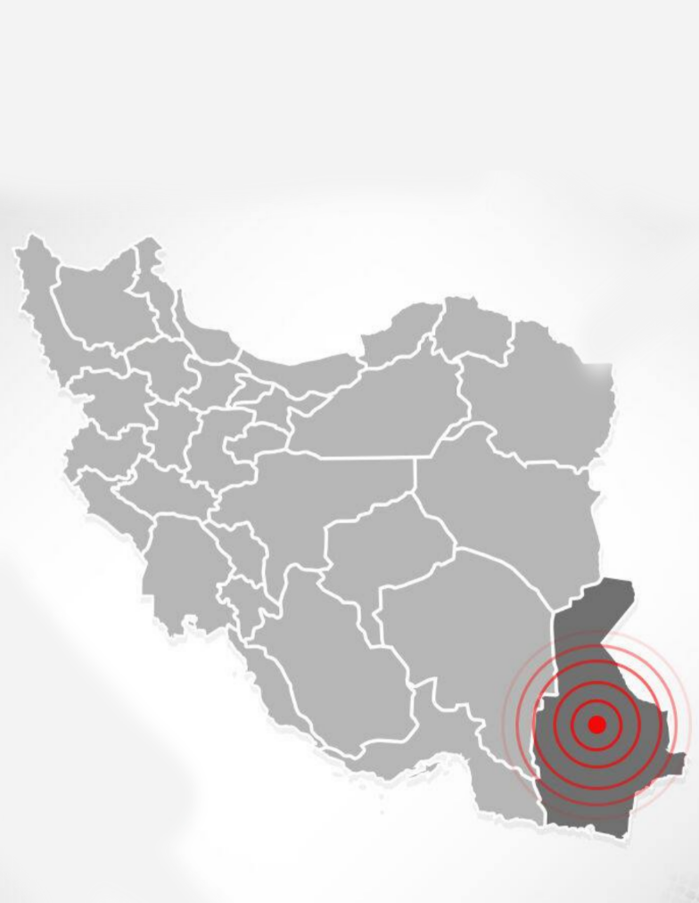

دوشنبه، 25 فروردین 1404 - 22:40:15 (وقت محلی - تهران)
2025-04-14 19:10:15 (UTC)
بزرگی زمینلرزه: 3.5
نوع بزرگی: MN
موقعیت رومرکز:
عرض جغرافیایی (شمالی): 29.93
طول جغرافیایی (شرقی): 59.86
عمق (کیلومتر): 10
فاصلهها:
15 کیلومتری نصرتآباد، سیستان و بلوچستان
120 کیلومتری سرجنگل، سیستان و بلوچستان
109 کیلومتری زاهدان، سیستان و بلوچستان
منبع: موسسه ژئوفیزیک، دانشگاه تهران
یکشنبه، 24 فروردین 1404 - 03:47:39 (وقت محلی - تهران)
2025-04-13 00:17:39 (UTC)
بزرگی زمینلرزه: 3.4
نوع بزرگی: MN
موقعیت رومرکز:
عرض جغرافیایی (شمالی): 29.40
طول جغرافیایی (شرقی): 61.603
عمق (کیلومتر): 14
فاصلهها:
60 کیلومتری نصرتآباد، سیستان و بلوچستان
86 کیلومتری سرجنگل، سیستان و بلوچستان
90 کیلومتری فهرج، کرمان
منبع: موسسه ژئوفیزیک، دانشگاه تهران
جمعه، 15 فروردین 1404 - 14:48:49(وقت محلی - تهران)
2025-04-04 11:18:49 (UTC)
بزرگی زلزله: 2.8
نوع بزرگی: MN
موقعیت رومرکز:
عرض جغرافیایی (شمالی): 27.597
طول جغرافیایی (شرقی): 61.603
عمق (کیلومتر): 6
فاصلهها:
41 کیلومتری گشت، سیستان و بلوچستان
52 کیلومتری سراوان، سیستان و بلوچستان
52 کیلومتری زابلی، سیستان و بلوچستان
منبع: موسسه ژئوفیزیک، دانشگاه تهران